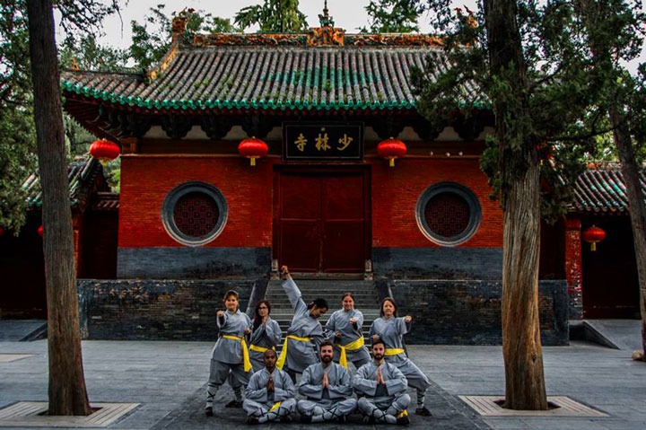
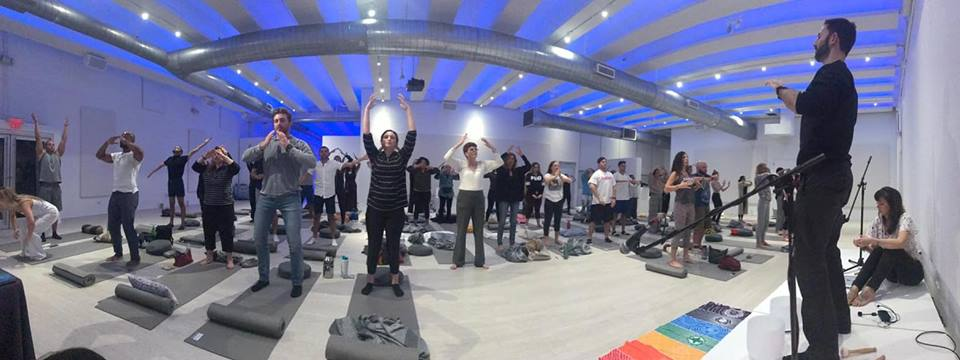

CR8 Health · Boca Raton

Meet your practitioner
At CR8 Health, acupuncture and Chinese medicine are led by Dr. Jonathan M. Fields, DAOM, L.Ac., who brings a blend of classical training and modern clinical reasoning to the care team. His background includes a doctorate and master's degree in Oriental medicine, study in China, certification in dry needling and advanced training in functional medicine and blood chemistry. He works collaboratively, sharing findings with the rest of your care team when you ask him to.
Care that happens only in the clinic is limited. Qigong gives patients a daily practice that supports their treatment plan. It costs nothing to practice, needs no equipment and can be adapted to nearly any fitness level.
Qigong and tai chi are among the better studied mind body practices. The NCCIH summarizes evidence suggesting benefits for balance, fall prevention in older adults, and quality of life in some chronic conditions. Reviews have examined effects on blood pressure, mood, sleep and fatigue (PMC3893407, PMC5861462, PMC8504989). A Cochrane review examined tai chi and qigong for specific conditions (PMC6360922), and other work has looked at qigong for chronic pain and stress (PMC8257957, PubMed 30125554). Results are encouraging, though many trials are small and methods vary.
Body. Posture is aligned and relaxed, joints are soft and movement is smooth.
Breath. Breathing is slow, quiet and comfortable, often through the nose with a longer exhale.
Mind. Attention rests on the movement and breath, which may help settle stress responses.

CR8 Health sees patients at 8234 Glades Rd in Boca Raton, with a care team that brings integrative and conventional perspectives together under one roof. Patients come to us from Boca Raton, Delray Beach, Highland Beach and the western communities. If you are not sure which service fits, call and our team will help you choose a starting point, whether that is an acupuncture visit, a functional medicine consultation or a combination. Bring a list of medications and supplements, recent lab work if you have it and a short summary of your health goals. We will explain costs and options before anything is scheduled, so there are no surprises.
Learn more
For readers who want the details: the research, the history and the reasoning behind how we work.
Assessment. Dr. Fields asks about injuries, balance, conditions and goals.
Foundations. You learn stance, posture and breathing first.
A short routine. A sequence of a few movements you can practice at home in five to fifteen minutes.
Refinement. Follow up sessions correct form and add movements as you are ready.
Stress. Slow breathing and focused movement are a practical daily tool for stress.
Back and neck pain. Gentle mobility work can complement acupuncture and exercise programs.
Balance. Weight shifting and controlled stepping train balance.
Recovery. After illness or surgery, with medical clearance, qigong can be a gentle starting point.
Metabolic health. Regular low intensity movement supports the goals of a functional medicine plan.
Dr. Fields has trained in martial arts for decades and has trained and led retreats at the Shaolin Temple in China. He has taught tai chi and qigong to community groups and university students in South Florida.
Qigong is low risk. Stop if you feel dizzy, short of breath or have pain. People with recent surgery, vertigo or severe osteoporosis should check with their physician first.
Standing like a tree (two minutes). Feet hip width apart, knees soft, arms rounded as if holding a large ball at chest height. Breathe slowly and let tension drain from the shoulders.
Lifting the sky (eight repetitions). Hands rise overhead on the inhale, palms up, and float down on the exhale.
Drawing the bow (six per side). Step into a wide stance and draw one arm back as if pulling a bowstring while the other points forward. Turn the head to follow the extended hand.
Separating heaven and earth (eight repetitions). One hand presses up while the other presses down, then switch.
Turning the head to look back (six per side). Gently rotate the head and upper back to look over the shoulder.
Shaking and settling (one minute). Gently bounce through the knees and let the arms hang loose, then stand still and breathe.
These movements come from the Ba Duan Jin, or Eight Pieces of Brocade, one of the most widely practiced qigong sets. Research on Ba Duan Jin has looked at outcomes such as balance, sleep and quality of life, with encouraging though preliminary results.
Natural breathing. Simply notice the breath without changing it. This is where beginners start.
Abdominal breathing. The belly expands gently on the inhale and softens on the exhale, with the chest relatively still.
Extended exhale. Exhale slightly longer than you inhale, for example four counts in and six counts out. Slow breathing with a longer exhale is commonly used for relaxation.
Never force or strain the breath. If you feel lightheaded, return to natural breathing.
Long days at a desk, frequent travel and constant connectivity are part of modern work. A five minute routine can fit between meetings or before bed. Many people find that standing practice in the morning and breathing practice in the evening give structure to the day. No special space is needed; a hotel room or an office corner works.
Qigong complements training by improving body awareness, breathing control and recovery. Golfers and tennis players often appreciate the focus on rotation through the hips and torso. Runners use slow standing work to develop balance and relaxed posture.
Simple measures help you see change: a single leg balance test near a counter, a resting heart rate check, a sleep quality rating, or a stress rating from one to ten before and after practice. Bring your notes to follow up visits so instruction can be adjusted.
Qigong is offered alongside acupuncture, Chinese herbal medicine and functional medicine. In clinic treatments work during visits; qigong extends the work into daily life.
Locking the knees, holding the breath, raising the shoulders, moving too fast and pushing into pain are common beginner errors. Instruction focuses on correcting these early, because small changes in alignment make a large difference in comfort.
CR8 Health has locations in Boca Raton and Delray Beach. Qigong instruction can be scheduled alongside other visits at either location.
Write down your top concerns, bring your current medication and supplement list, and note any recent test results. Arriving a few minutes early leaves time to settle in and complete forms without feeling rushed.
Standing. The most common form, building leg strength and balance.
Seated. Ideal for people with limited mobility, recovering from injury or practicing at a desk. Arm movements and breathing remain the same.
Lying. Some breathing and relaxation exercises can be done lying down before sleep.
Many people feel calmer after a single session. Changes in balance, flexibility and sleep usually take several weeks of regular practice. Consistency matters more than session length: ten minutes daily tends to be more helpful than an hour once a week.
Small group sessions offer motivation and community. Ask our office about current group offerings and private lessons.
Some popular breathing methods involve forceful breathing or long breath holds. Medical qigong as we teach it does not. The breath stays relaxed and comfortable, which makes it suitable for most people, including those with blood pressure concerns, when cleared by their physician.
Wear loose, comfortable clothing and flat shoes or practice barefoot on a non slip surface. Bring water and a small notebook to record the routine and your observations.
They are related. Tai chi is a martial art practiced as moving meditation. Qigong is a broader category of health exercises.
Daily practice of ten to fifteen minutes is a good goal.
Yes.
No. The practice can be understood as gentle exercise, breathing and attention training.
Many people use short breathing and movement breaks during the workday to reset. It is a practical habit rather than a treatment.